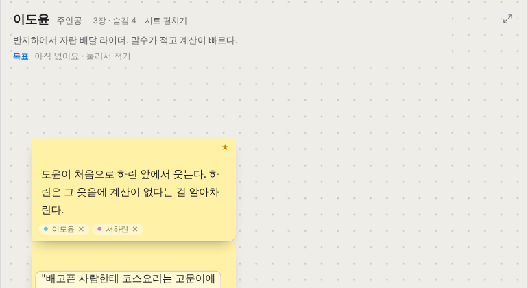
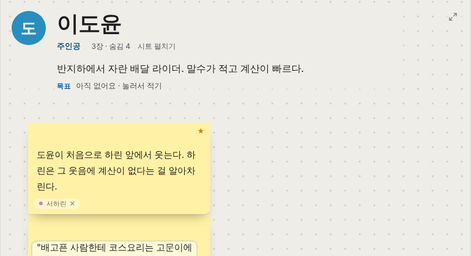
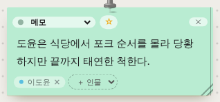
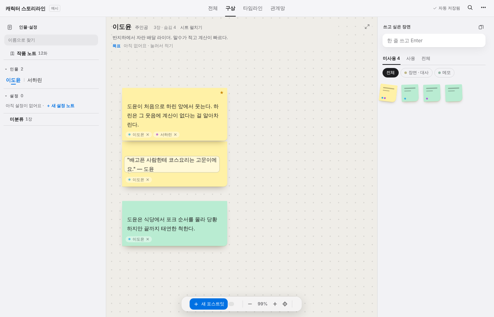
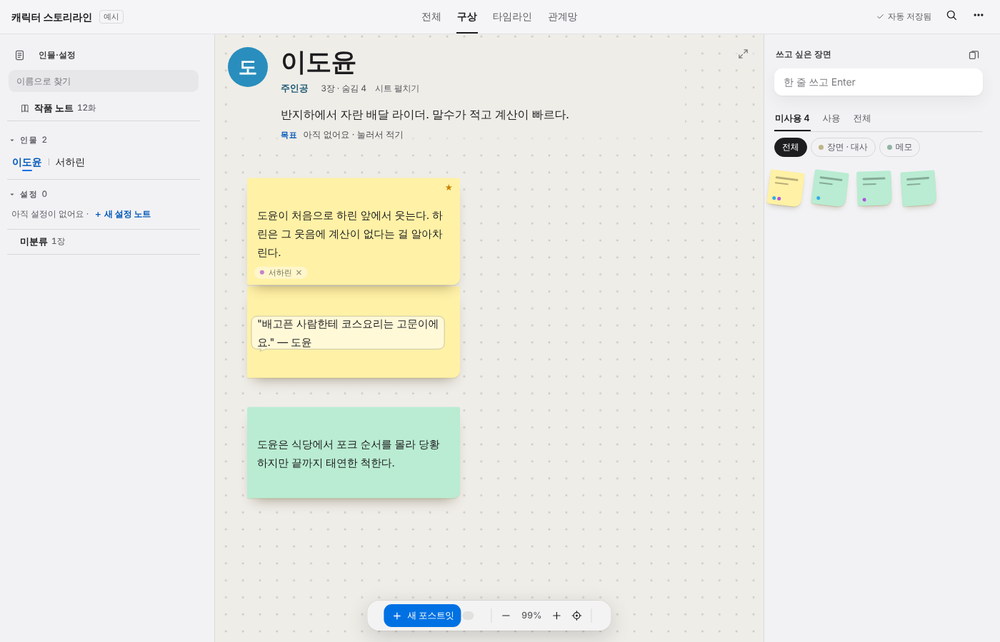

impeccable 4.8.0 규칙집(critique.md · bolder.md)대로 진행했어요. 예시 작품, 1400×900, 기본 테마예요. 앱 코드는 바꾸지 않았고, 시안 화면에만 CSS를 덮어씌웠어요.
절반만 이 제품 거예요. 코르크보드 · 포스트잇 · 핀 · “화” 단위 타임라인 · 카드 무덤은 소설 구상 노트만의 장치예요. 그런데 그 장치를 감싼 틀(위 탭, 왼쪽 목록, 머리글)은 애플 기본 앱 같은 무난한 시스템 UI라서 다른 앱에 그대로 옮겨도 티가 안 나요. 제품 설명이 “캐릭터 중심 구상 노트”인데, 정작 화면에서 인물은 18px 이름 한 줄과 칩 속 작은 색 점으로만 존재해요. 가장 큰 기회는 인물을 화면의 주인공으로 세우는 것이에요.
| # | 휴리스틱 | 점수 | 핵심 |
|---|---|---|---|
| 1 | 상태 보이기 | 3 | “✓ 자동 저장됨”이 늘 보임. 무덤 D-3 표시도 좋음 |
| 2 | 현실 세계와 맞추기 | 3 | 코르크보드 · 포스트잇 · 화. 다만 “코르크”인데 바탕은 흐린 베이지 점무늬 |
| 3 | 되돌리기 · 자유 | 3 | 바로 지우지 않고 무덤 → 되살리기, 휴지통이 따로 있음 |
| 4 | 일관성 | 2 | 같은 카드가 보드에서는 색 포스트잇, 타임라인에서는 흰 카드 + 이니셜, 오른쪽에서는 글자 없는 미니 포스트잇 |
| 5 | 실수 막기 | 3 | 폐기 / 무덤 / 휴지통 구분 |
| 6 | 기억 대신 알아보기 | 2 | 오른쪽 “쓰고 싶은 장면” 미니 카드에 내용이 안 보여 하나씩 올려 봐야 함. 많은 버튼이 마우스를 올려야 나타남 |
| 7 | 유연성 · 효율 | 3 | 단축키(⌥4 등), 집중 모드, 여러 보기 |
| 8 | 미니멀한 디자인 | 3 | 보드는 정돈됨. 타임라인 도구줄은 컨트롤 9개 이상 |
| 9 | 오류 회복 | 3 | 백업 · 되살리기 |
| 10 | 도움말 | 3 | 첫 실행 안내 + 장르별 예시 작품 |
| 합계 | 28/40 | 좋음. 실제 앱 대부분이 20~32점 |
왜: 구상 보드에 들어와도 “지금 누구의 보드인지”가 18px 이름 한 줄뿐이에요. 인물 색은 칩 속 점으로만 보여요.
고치기: 인물 머리글을 보드의 중심으로. 이미 쓰는 인물 색 · 이니셜 동그라미 · 큰 숫자 크기를 그대로 키워서 써요. → 2부 bolder 시안
왜: 이 목록의 역할이 “아직 안 쓴 장면을 한눈에”인데, 카드가 글자 없는 작은 색 사각형이라 하나씩 올려 봐야 해요.
고치기: 첫 줄이라도 글자로 보여 주기(목록형 또는 큰 카드형). 추천 명령: distill · clarify
왜: 보드에서는 노랑 · 초록 포스트잇, 타임라인에서는 흰 카드라서 같은 장면인지 바로 안 이어져요.
고치기: 타임라인 카드에도 카드 색을 왼쪽 띠가 아닌 바탕 색으로 옅게 남겨요. 추천 명령: colorize
왜: 칸반/한 줄/등장표/보관, 분류, 원고/묶음/카드, 보관, 글 폭, 가/가, 전체 12화, 원고, ＋화가 한 줄에 다 있어요. 한 번에 고를 게 4개를 넘으면 부담이 커져요.
고치기: 자주 쓰는 2~3개만 남기고 나머지는 “보기 옵션”으로(관계망에서 이미 한 방식). 추천 명령: distill
회색 글자 대비 부족 6곳, 10.4px 글자 1곳(1차 시안에서 고침). ⑂ · ✕ · ★ 같은 글자 기호가 아이콘을 대신하고 있어요. 추천 명령: polish
소스: 경고 2건(둘 다 판단 결과 화면 문제 아님 · 1차 시안 참고), 참고 1건. 화면: 대비 부족 6 + 작은 글자 1. 디자인 리뷰에서 놓친 건 “고른 인물 이름 파랑 대비 4.2”였어요.
대상은 critique의 P1 하나예요. bolder 규칙대로 대상 밖은 건드리지 않았고, 새 색 · 새 글꼴을 들이지 않았어요. 쓴 건 앱에 이미 있는 것뿐이에요: 인물 색(칩 점) · 이니셜 동그라미(타임라인) · 이야기 글꼴과 큰 숫자 크기(화 번호 32px).



연결 해제(✕) 기능은 그대로예요.


design/impeccable-bolder.css의 규칙을 styles/fresh.css의 인물 머리글 쪽으로--cc로, 이니셜을 data-ini로 넣기(지금 시안은 화면에서 임시로 넣음). 이 보드 인물의 칩에 self 붙이기polish로 마무리